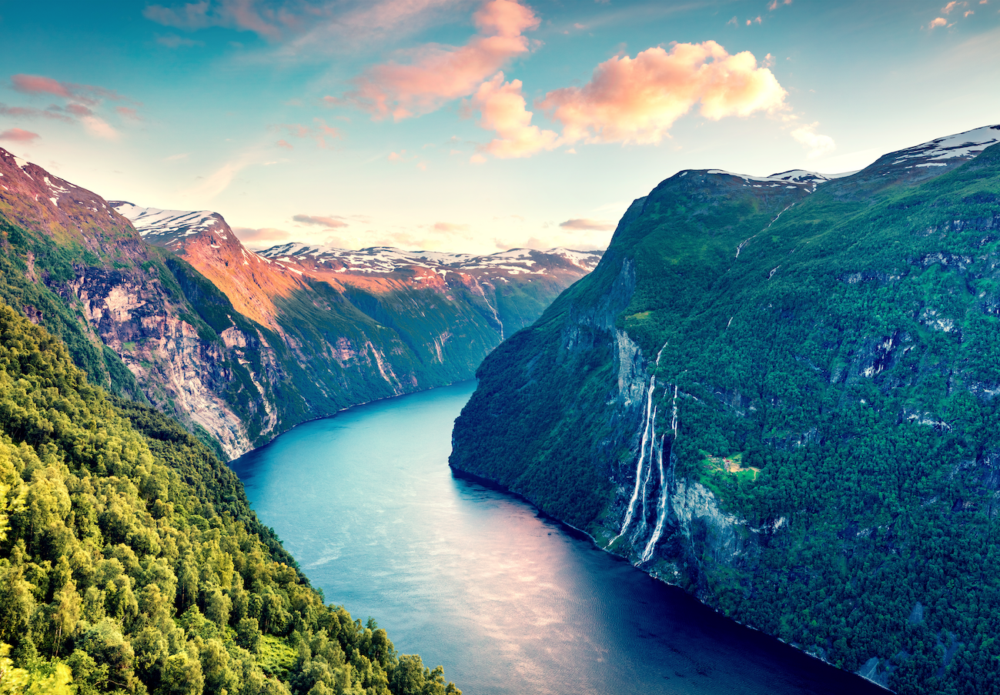
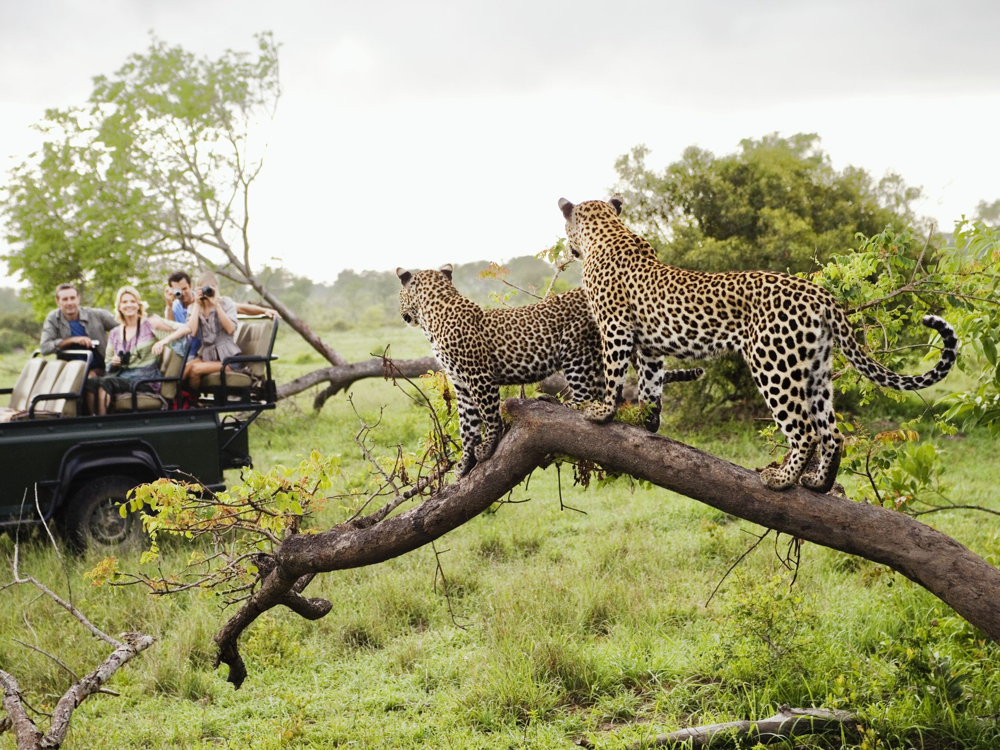
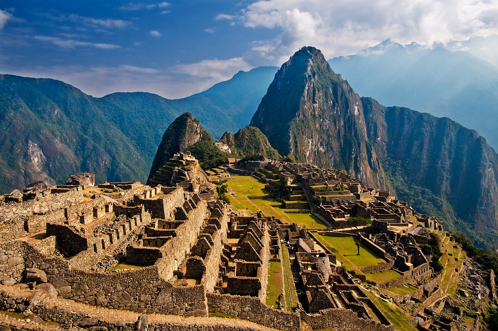
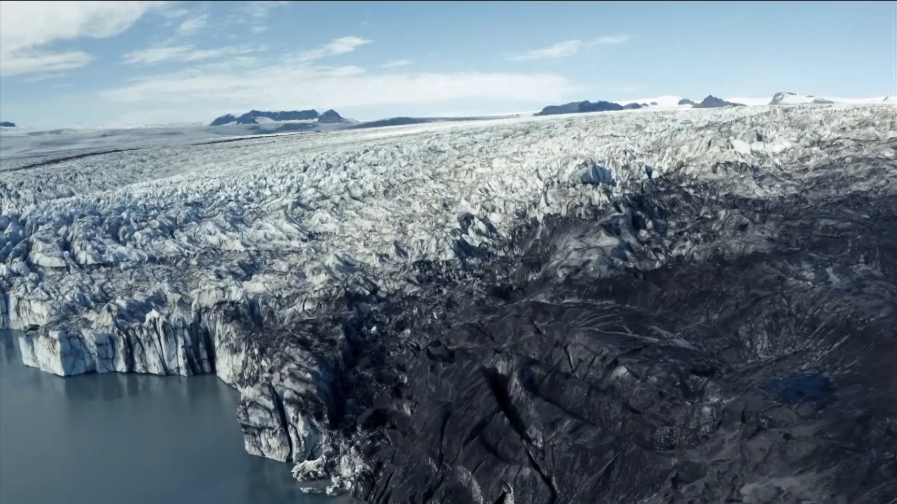

<!DOCTYPE html>
<html xmlns="http://www.w3.org/1999/xhtml"></html>
<html lang="en">
<head>
    <meta charset="UTF-8">
    <meta name="viewport" content="width=device-width, initial-scale=1.0">
    <title>Zavrti globus</title>
    <link rel="icon" href="favicon.ico">
    <!-- booststrap -->
    <link href="https://cdn.jsdelivr.net/npm/bootstrap@5.0.0-beta1/dist/css/bootstrap.min.css" rel="stylesheet" integrity="sha384-giJF6kkoqNQ00vy+HMDP7azOuL0xtbfIcaT9wjKHr8RbDVddVHyTfAAsrekwKmP1" crossorigin="anonymous">
    
    <link rel="stylesheet" href="style.css">
    <!-- font -->
    <link rel="preconnect" href="https://fonts.gstatic.com">
    <link href="https://fonts.googleapis.com/css2?family=Charm&display=swap" rel="stylesheet">
    
    <style>
        /* .slika{
            margin-top: 0;
            
        }
        .slika img{
            height: 100%;
            width: 100%;
            border-radius: 15%;
        } */

        #norveska_slika img{
            padding-top: 3%;
        }
        .slika{
            margin-top: 0;
        }

        .tekst{
            margin-top: 5%;
        }
    </style>
</head>
<body>
    <div id="animacija"> </div>
    <script src="lottie.js"></script>
    <!-- <script src="javascript.js"></script> -->


    <audio id="myAudio">
        <source src="pocetna.wav" type="audio/wav">
      </audio>
    <div class="d-grid gap-2 col-6 mx-auto">
        <button id="pusti" class="btn btn-info" onclick="playAudio()" type="button">Pusti animaciju</button>
        <button id="zaustavi" class="btn btn-info" onclick="stopAudio()" type="button">Zaustavi animaciju</button>
    </div>

    
<script>
    var x = document.getElementById("myAudio"); 
    function playAudio() { 
    x.play(); 
    }
    function stopAudio() { 
    x.pause(); 
    }
    let iconSkipForward = document.querySelector('#animacija');
    let dugmePusti=document.querySelector('#pusti');
    let dugmeZaustavi=document.querySelector('#zaustavi');
    let animationSkipForward = bodymovin.loadAnimation({
        container: iconSkipForward,
        renderer: 'svg',
        loop: false,
        autoplay: false,
        path: 'data.json'
    });
    dugmeZaustavi.addEventListener('click', function() {
        animationSkipForward.pause();
    });
    dugmePusti.addEventListener('click', function() {
        animationSkipForward.play();
    });
</script>


<div class="container">
    <div class="drzave">
        <div class="red">
            <div class="kolona">
                <div class="slika" id="norveska_slika">
                    
                </div>
            </div>
            <div class="kolona">
                <div class="tekst">
                    <h2><a href="drzave/norveska/norveska.html" target="_blank">Norveška</a></h2>
                    <p>
                        Kraljevina Norveška,poznata je još I kao zemlja “zemlja hiljadu fjordova”,koji spadaju u
                        fanstastična mesta na planeti,a još je poznata I kao “zemlja polarnog sunca”.
                        Norveška je zemlja sa najnepristupačnijom obalom,a u svom sastavu ima oko 50.000 ostrva. Ona
                        je postojbina paganskih bogova Odina I Tora,kao I letnjeg sunca koje ne zalazi čak ni u ponoć.
                        Norveška krstarenja nude veliki izbor lzleta,gde posetioci mogu da se iskrcaju I upoznaju sa
                        njenom kulturom I baštinom- od arhitekture,muzeja,književnosti, do festivala I koncerata. 
                    </p>
                </div>
            </div>
        </div>
    </div>

    <div class="drzave">
        <div class="red">
            <div class="kolona">
                <div class="tekst">
                    <h2><a href="drzave/juzna_afrika/juzna_afrika.html" target="_blank">Južna Afrika</a> </h2>
                    <p>
                        Afrika! Lavovi, slonovi, bizoni, leopardi, nosorozi...
                        Susretnite se sa ovom fantastičnom petorkom u nacionalnom parku Kruger. Put u Južnu Afriku
                        nije kompletan bez safarija u ovom znamenitom parku.
                        Svetski poznat,Kruger zauzima površinu od 20.000 km kvadratnih,I time je najveći rezervat na
                        afričkom kontinentu. 1926. Godine park je napravljen kao prvi zaštićeni rezervat u Južnoafričkoj
                        Republici,I još uvek je omiljena destinacija za ljubitelje prirode koji žele da se sažive sa afričkom
                        divljinom. 
                    </p>
                </div>
            </div>
            <div class="kolona">
                <div class="slika">
                    
                </div>
            </div>
        </div>
    </div>

    <div class="drzave">
        <div class="red">
            <div class="kolona">
                <div class="slika">
                    
                </div>
            </div>
            <div class="kolona">
                <div class="tekst">
                    <h2><a href="drzave/peru/peru.html" target="_blank">Peru</a> </h2>
                    <p>
                        Latinska Amerika predstavlja poseban izazov, za one koji bi želeli da nauče nešto više o istoriji
                        civilizacije Inka,I usput osete avanturu,prostranstva Perua su prava destinacija.
                        Peru ima obalu koja izaziva surfere,ali takođe ima I gorostasne Ande,duboke kanjone,velika
                        jezera I još mnogo toga što predstavlja izazov za ljubitelje prirode.
                        Dođite da upoznate Peru,zemlju koja vekovima unazad,zbog svoje bogate istorije I kulture,
                        neverovatnih prirodnih različitosti,privlači posetioce širom sveta. 
                    </p>
                </div>
            </div>
        </div>
    </div>

    <div class="drzave">
        <div class="red">
            <div class="kolona">
                <div class="tekst">
                    <h2><a href="drzave/island/island.html" target="_blank">Island</a> </h2>
                    <p>
                        Nedovoljno otkrivena I neistražena,ova mala ostrvska država na samom severu Evrope predstavlja pravu
                        poslasticu za putnike odviknute od komercijalnih destinacija,koji su željni avanture I novih iskustava.
                        Island je zemlja nestvarnih prirodnih lepota u kojoj možete videti gotovo sve: od glečera opasanih
                        ledom,preko polja lave,gejzira I vodopada pa sve do dugačkih plaža od belog I crnog peska,tektonskih
                        ploča,plavih kitova,vulkanskih kupola...
                        Ovo nije obično putovanje,ovo je avantura koja se pamti čitavog života! 
                    </p>
                </div>
                </div>
            <div class="kolona">
                <div class="slika">
                    
                </div>
            </div>
        </div>
    </div>
</div>  
</body>
</html>